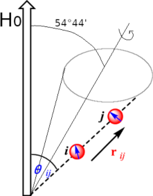

Solid State NMR
The principal difficulty with the application of NMR to solids is the low resolution characteristic of solid samples. Nevertheless, there are good reasons for seeking to overcome these difficulties. They include the possibility that a compound of interest is unstable in solution or that it is insoluble, so conventional solution NMR cannot be employed. Moreover, many species are intrinsically interesting as solids, and it is important to determine their structures and dynamics. Synthetic polymers are particu- larly interesting in this regard, and information can be obtained about the arrangement of molecules, their conformations, and the motion of different parts of the chain. This kind of information is crucial to an interpretation of the bulk properties of the polymer in terms of its molecular characteristics. Similarly, inorganic substances, such as the zeolites that are used as molecular sieves and shape-selective catalysts, can be studied using solid-state NMR, and structural problems can be resolved that cannot be tackled by X-ray diffraction. Problems of resolution and linewidth are not the only features that plague NMR studies of solids, but the rewards are so great that considerable efforts have been made to overcome them and have achieved notable success. Because molecular rotation has almost ceased (except in special cases, including ‘plastic crystals’ in which the molecules continue to tumble), spin–lattice relaxation times are very long but spin–spin relaxation times are very short. Hence, in a pulse experiment, there is a need for lengthy delays—of several seconds—between successive pulses so that the spin system has time to revert to equilibrium. Even gathering the murky information may therefore be a lengthy process. Moreover, because lines are so broad, very high powers of radiofrequency radiation may be required to achieve saturation. Whereas solution pulse NMR uses transmitters of a few tens of watts, solid-state NMR may require transmitters rated at several hundreds of watts.
There are two principal contributions to the linewidths of solids. One is the direct magnetic dipolar interaction between nuclear spins. As we saw in the discussion of spin–spin coupling, a nuclear magnetic moment will give rise to a local magnetic field, which points in different directions at different locations around the nucleus. If we are interested only in the component parallel to the direction of the applied magnetic field (because only this component has a significant effect), then we can use a classical expression to write the magnitude of the local magnetic field as
Hloc = −γiγj;ℏμ0mI/4πrij3 (1−3cos2θij)
where θij is the angle between the internuclear vector and H0.
rij is the distance vector between nuclei
When molecules move rapidily and isotropically, as in solutions, this factor goes to zero and the nuclei do not feel the presence of dipolar coupling. Many nuclei may contribute to the total local field experienced by a nucleus of interest, and different nuclei in a sample may experience a wide range of fields. Typical dipole fields are of the order of 10−3T, which corresponds to splittings and linewidths of the order of 104 Hz.
A second source of linewidth is the anisotropy of the chemical shift. We have seen that chemical shifts arise from the ability of the applied field to generate electron currents in molecules. In general, this ability depends on the orientation of the molecule relative to the applied field. In solution, when the molecule is tumbling rapidly, only the average value of the chemical shift is relevant. However, the anisotropy is not averaged to zero for stationary molecules in a solid, and molecules in different orientations have resonances at different frequencies. The chemical shift anisotropy also varies with the angle between the applied field and the principal axis of the molecule as 1−3cos2θ.
MAS
In a Mas experiment, the sample is placed in a cylindrical rotor that is oriented at a 54.74° angle relative to the external H0 field. The term (1−3cos2θij)
